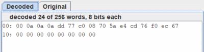
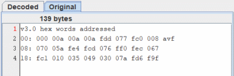

Memory file panel
This window opens when the file recognition fails to determine the type of the data structure. It consists of a series of checkboxes to specify the conversion options. Two hexadecimal display tabs that show the file data and a text box that displays any errors that may have been detected.

The four radio buttons are used to select one of the file structure types shown above. For each type checkboxes will be activated. They allow you to specify specific options.
You will find information in the pages dedicated to these types
- v2.0 raw
- v3.0 hex words plain/adressed
- v3.0 hex bytes big-endian/little-endian
- Binary data big-endian/little-endian
- Ascii byte escape big-endian/little-endian
The hexadecimal display panel allows you to observe how Logisim decodes the file.

And compare it to its original version.

Below you will have a report on the decoding and any errors found.

Next:Logisim User Guide.